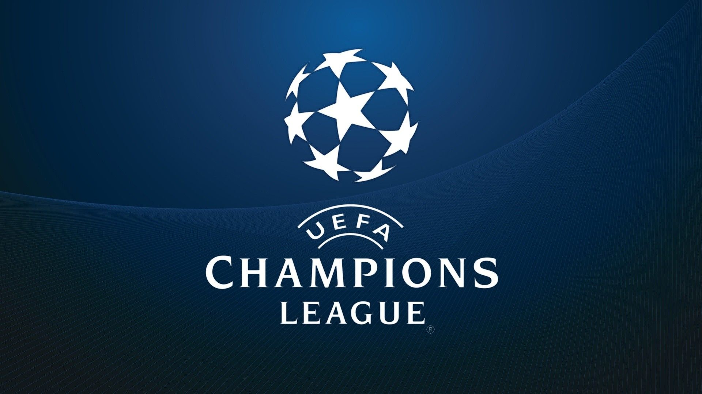
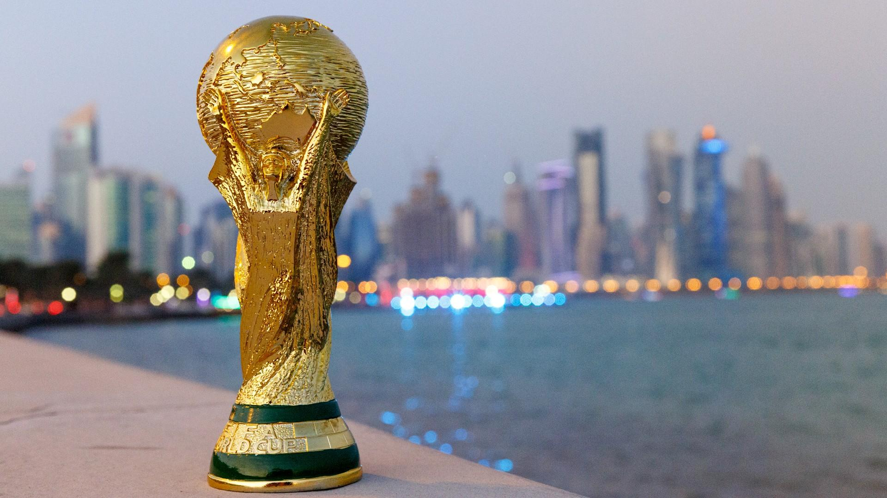

Junto a tus amigos creen sus equipos y anoten sus puntos para saber cual equipo es el mejor.

¡Haz torneos virtuales!
tus propias ligas y equipos para jugar en fifa en tu consola favorita.

Junto a tus amigos creen sus equipos y anoten sus puntos para saber cual equipo es el mejor.
Somos esa aplicación web que te llevará el conteo de cuantos puntos lleva tu equipo, cuantas ligas tienes y que equipos pertenecen olvidate de perder ese dichoso papel donde llevaban los puntos, que quede en la web quien de tus equipos es el mejor.
El próximo mundial marcará el fin de una era, jugadores como Leonel Andres Messi Cuccittini jugara su último mundial, al igual que muchas otras estrellas como Cristiano Ronaldo Dos Santos Aveiro.
Last updated 3 mins ago
Durante el mundial de Brasil 2014, en el partido Alemania vs Brasil (Brasil jugaba como local), ha sido uno de los partidos mas históricos porque Alemania le ganó a Brasil con un marcador de 7-1, y era semifinal.
2014, Brasil
El Real Madrid es el equipo que mayor cantidad de champions tiene, un total de 13, (actualmente esta en la gran final, con la oportunidad de ganar la champions número 14).
2022, Madrid
El Club Social y Deportivo Municipal, es de los pocos equipos Centro Americanos en ganar la Concachampion, que es quivalente a la Champions League pero esta es de Centro, Norte America y el caribe.
2022, Guatemala

El FC Barcelona forma parte de los 6 equipos en ser únicos por haber ganaro el sextete, o sextuplete
2022, Barcelona
El AC Milan es uno de los clubes más grandes de toda Europa pero actualmente es un gigante dormido que lleva casi 15 años sin ganar una Copa de Europa. Históricamente, los italianos han sido uno de los dominadores del torneo y, después del Real Madrid, son el equipo que más orejonas ha levantado.
2022, Barcelona